Explore Leipzig
A Brief History
Leipzig's trade fairs date to the 12th century and made it a crossroads of printing, music, and commerce in Saxony. Johann Sebastian Bach directed the Thomanerchor at St. Thomas Church in the 18th century. The 1813 Battle of the Nations nearby involved armies from across Europe. Peaceful Monday demonstrations in 1989 at St. Nicholas Church helped end East German communist rule, preceding reunification.
Attractions Map
Top Sights & Activities
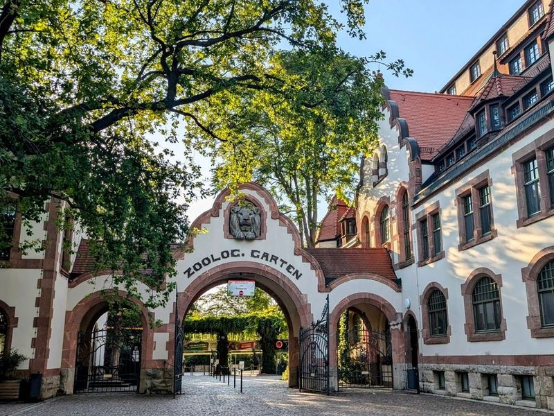
Zoo Leipzig
Zoo Leipzig in the Pfaffendorf district is known for Gondwanaland, a tropical hall beneath a glass dome, and continental-themed zones from Pongoland to Asia. Founded in 1878, the zoo prioritises naturalistic enclosures and species conservation. Historic entrance buildings face the Rosental park.
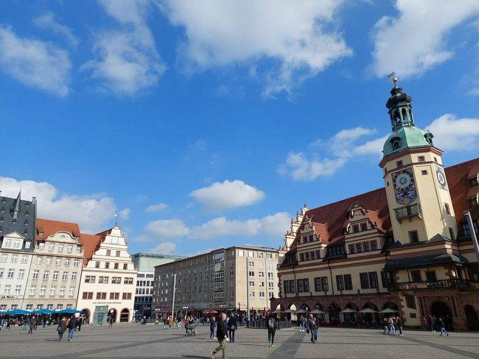
Marktplatz Leipzig
Leipzig's Marktplatz is framed by the Renaissance Old Town Hall with its baroque tower and the modern city administration wings. Markets and festivals fill the square beneath the stepped gable of the 16th-century Rathaus. The Mädler-Passage shopping arcade opens from the south side.
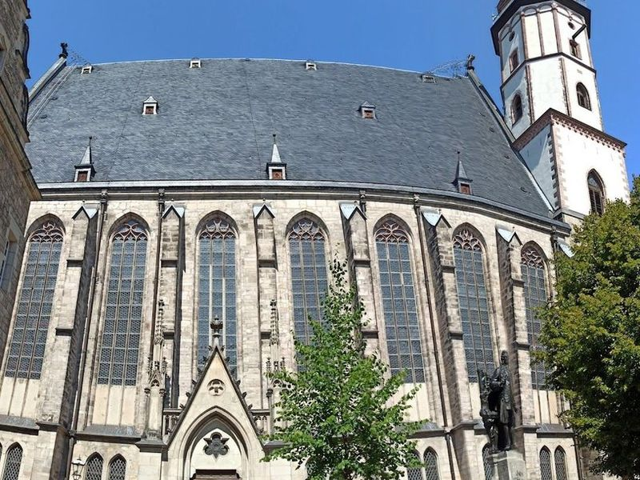
St. Thomas Church
St. Thomas Church is a late Gothic hall church where Johann Sebastian Bach served as cantor from 1723 until his death in 1750. The Thomanerchor boys' choir still performs here, and Bach's grave lies in the chancel. Twin towers and rib-vaulted nave define the Thomaskirchhof square.
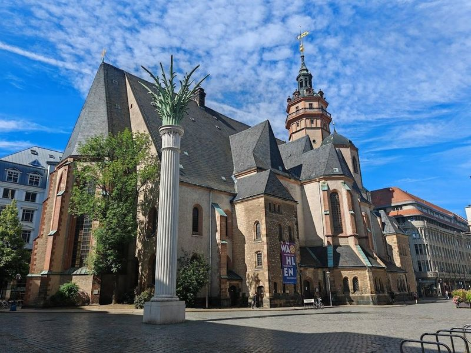
St. Nicholas Church
St. Nicholas Church is a Romanesque and Gothic church on Nikolaikirchhof where Monday prayers in 1989 swelled into mass demonstrations for reform. The interior features pale columns and a striking altar. The church remained open throughout the peaceful revolution that preceded German reunification.
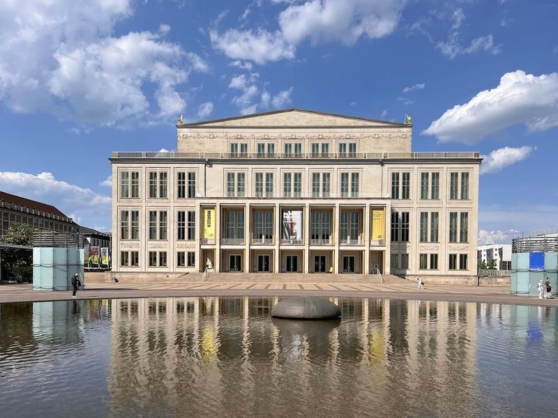
Oper Leipzig
Oper Leipzig on Augustusplatz is one of Europe's oldest civic opera houses, with a company dating to 1693 and a modern auditorium opened in 1960. The opera and Gewandhaus orchestra share the post-war cultural quarter. Wagner premiered early works here as Kapellmeister in the 1840s.
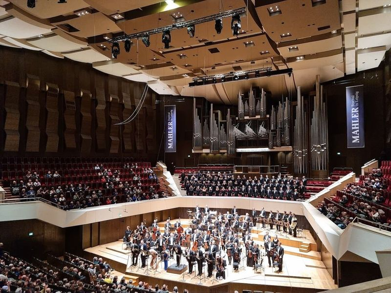
Gewandhaus
The Gewandhaus on Augustusplatz is the concert hall of the Leipzig Gewandhaus Orchestra, one of the world's oldest symphony orchestras founded in 1743. The current building from 1981 seats about 1,900 with vineyard-style terraces. Mendelssohn conducted here as music director in the 1830s.
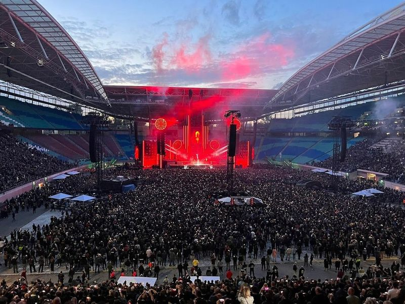
Red Bull Arena
The Red Bull Arena in the Sportforum district is the home ground of RB Leipzig, seating about 47,000 for Bundesliga matches. Built on the site of the former Zentralstadion from 1956, it was rebuilt for the 2006 World Cup. Stadium tours run on non-match days through the stands and media areas.
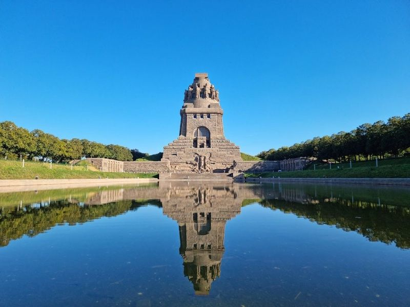
Völkerschlachtdenkmal
The Völkerschlachtdenkmal commemorates the 1813 Battle of the Nations, when allied forces defeated Napoleon outside Leipzig. Completed in 1913, the 91-metre monument encases a hall of giant statues and a viewing platform. Stone warriors and mourning figures line the monumental crypt.
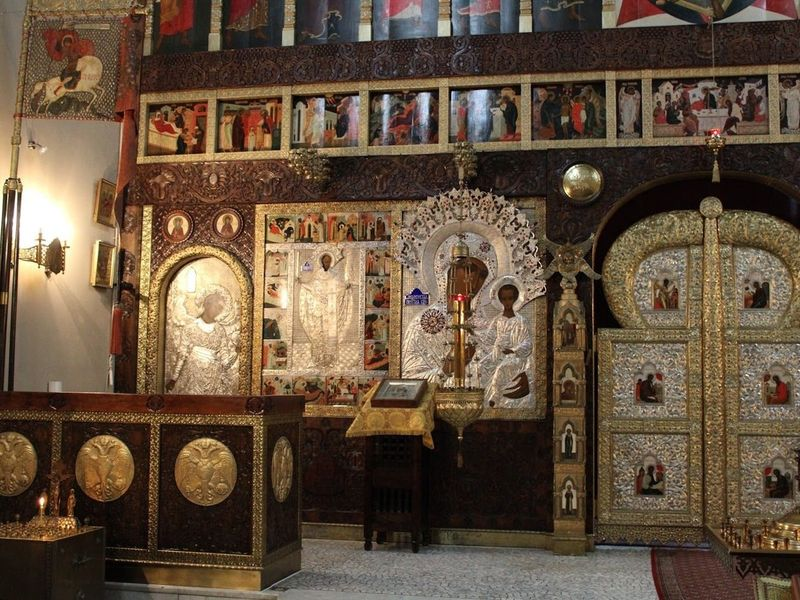
Russische Gedächtniskirche
The Russische Gedächtniskirche on Taubestrassse is a Russian Orthodox chapel built in 1913 to honour Russian soldiers killed in the 1813 battle. Golden onion domes and a dark brick exterior distinguish the memorial. It stands in the historic cemetery quarter south of the centre.
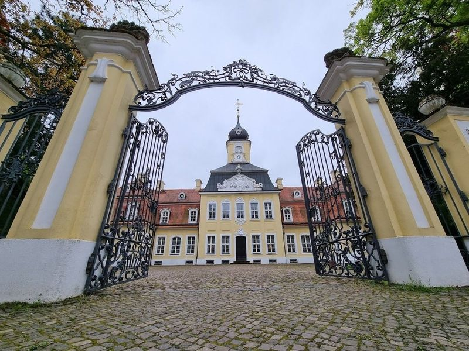
Gohlis Palace
Schloss Gohlis is a rococo manor in northern Leipzig built in 1756 for a city councillor, with a salon decorated in chinoiserie style. The surrounding park and orangery host summer concerts. The house is one of the few aristocratic villas preserved within the city limits.
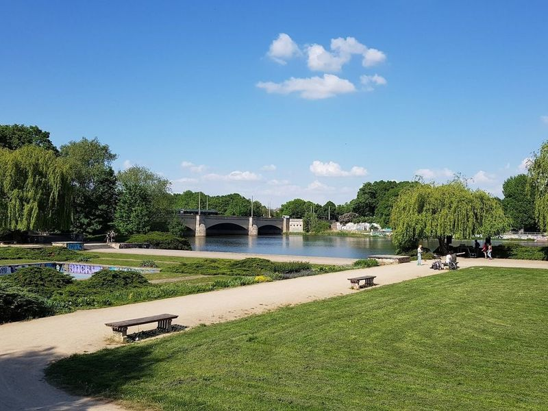
Leipziger Auwald
The Leipziger Auwald is a riverside forest belt along the Pleisse, White Elster, and Parthe threading through the city. Floodplain trails link parks, beaches, and the Cospudener See to the south. The woodland has been protected since the Middle Ages as a timber and recreation reserve.
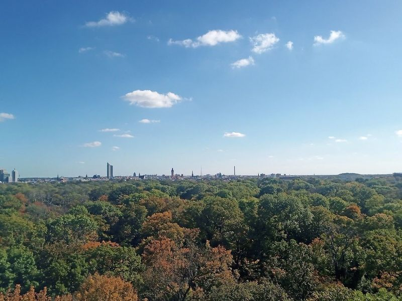
Rosentalturm
The Rosentalturm is a steel observation tower in Clara-Zetkin-Park offering views over the zoo and city rooftops. Erected as a temporary structure, it became a popular vantage point above the Rosental valley. The tower stands beside paths through old-growth trees near the university quarter.
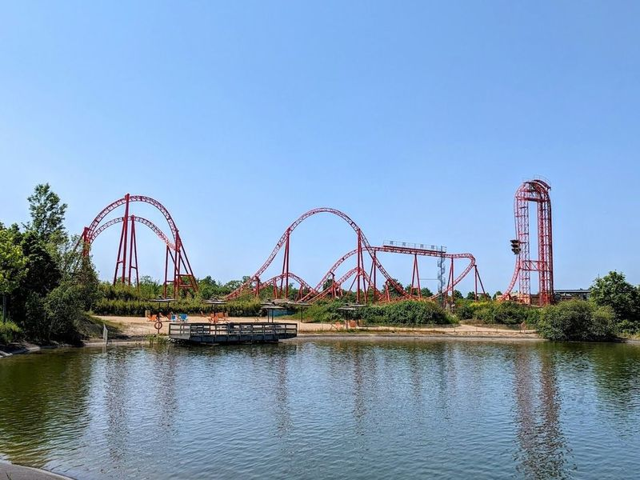
Belantis
Belantis is a theme park south of Leipzig in the Seenland district, opened in 2003 with themed zones from Valley of the Pharaohs to Fairy Tale Forest. Roller coasters and water rides target families on a landscaped site near Lake Störmthal. The park operates seasonally from spring through autumn.